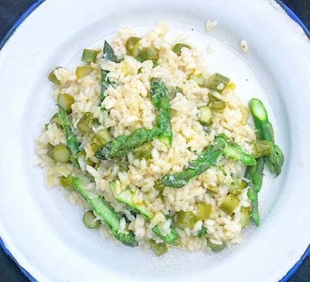

Home
Asparagus Risotto

This creamy asparagus risotto is flavored with garlic and white wine, and finished with Parmesan cheese, lemon
juice,
and lemon zest for a bright flavor.
Asparagus Risotto Ingredients
These are the ingredients you’ll need to make this asparagus risotto recipe at home:
- Vegetables: You’ll need an onion, celery, and asparagus.
- Broth: Use store-bought or homemade chicken broth.
- Oil:Cook the onion and celery in oil until they're tender.
-
Seasonings: Season the asparagus risotto with salt, pepper, and fresh garlic.
- Rice: Arborio rice is perfect for making risotto.
- Wine: Opt for a dry white wine, such as Chardonnay or sauvignon blanc.
- Cheese:Parmesan cheese lends richness and creamy flavour.
- Lemon:You'll need lemon juice and zest for this flavourful risotto!
How to Make Asparagus Risotto
You’ll find the full, step-by-step recipe below – but here’s a brief overview of what you can expect when you
make
asparagus risotto at home:
- Steam the asparagus and cut into pieces.
- Cook the onion and celery until tender, season, and add garlic and rice.
- Cook and stir until rice is lightly toasted.
- Add the liquids gradually according to the detailed recipe below.
- Stir in the asparagus.
- Remove from heat and mix in cheese, juice, and zest.